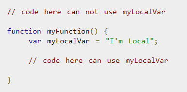
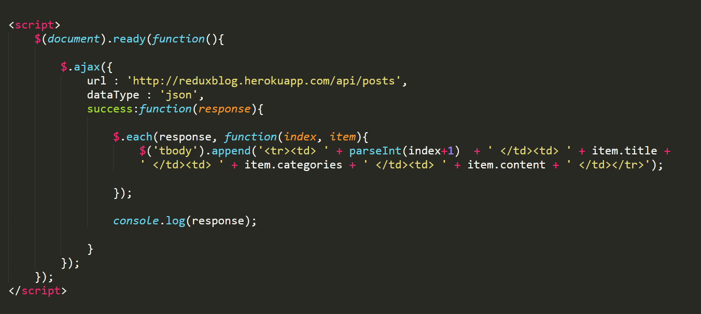
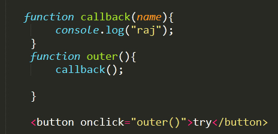

Javascript
What Are The Core Data Types Available In JavaScript?
Number
Object
String
Boolean
Function
Null
Undefined
What Is Difference Between Window.Onload And OnDocumentReady ?
The
As a web developer, we have to ensure the page should load as quick as possible. The event
What Is The Difference Between Undefined Value And Null Value?
undefined means a variable has been declared but has not yet been assigned a value. On the other hand, null is an assignment value. It can be assigned to a variable as a representation of no value
How Do You Change The Style/Class On Any Element From JavaScript?
document.getElementById(“input”).style.fontSize = “10”;
-or-
document.getElementById(“button”).className = “classname”;
What Are Different Types Of Popup Boxes Available In JavaScript?
Alert – It just has a
Confirm – It pops up a window showing up
Prompt – It gives a dialog asking for user input followed by showing
what is the difference between let and var ?
The main difference is the scope difference
while let can be only available inside the scope it's declared, like in for loop,
var can be accessed outside the loop also

What Is Scope In JavaScript?
The general meaning of scope is the accessibility of functions and variables in an application. Usually, we use them in two ways, i.e., Local and Global.
A) Local Scope
If we declare a function or variable inside a function, then we can access it only inside that function.

B) Global Scope
Declaring a variable anywhere on the page would mean that we can access it from any of the functions on that page.
What Is The Use Of Keyword In JavaScript?
The
What is Javascript Hoisting?
A variable is declared first and then called. If variable is declared on bottom and called earlier, value will be undefined. Only assigned values are hoisted in Javascript, like string, numbers etc. Undefined and function declaration can be called before declaration as they are not hoisted, and there is no assignment operator (=) in both. JavaScript Variables
Event bubbling and Event Capturing ?
when an event fire on the element and then bubble up DOM Tree Means First child and then parent will call.

How to compare 2 arrays in JavaScript? and how you show
we have to find first arry length and using condition we can copare like below code

Use of Jquery ready function. ?
Jquery recommends use of $(document).ready(function(){ }) or $(function(){ }) in script tag to write jquery syntax. Jquery ready function execute Jquery functions after all html elements are loaded, before images, iframes, ads are loaded.
What is jQuery Ajax?
AJAX is an acronym standing for Asynchronous JavaScript and XML and this technology helps us to load data and exchange data with the server without a browser page refresh
What does ajax() method do?
This method sends an asynchronous http request to the server.
What does the ajax method load() do?
The load() method sends an http request to load the html or text content from the server and adds them to the DOM element(s).
What are the jQuery Ajax Events?
The jQuery library also includes events which will be fired based on the state of the Ajax request, these are called Ajax events.
What is JSON Why JSON ?
JSON: JavaScript Object Notation.
When exchanging data between a browser and a server, the data can only be text
Is it possible to break JavaScript Code into several lines?
Breaking within a string statement can be done by the use of a backslash, '\', at the end of the first line
What are all the looping structures in JavaScript?
For
While
do-while loops
What is Closure? Give an example ?
A closure is a function having access to the parent scope, even after the parent function has closed.
how to convert string to array ?
using split we we can convert
how to convert array to string ?
using toString() we we can convert

how to convert string to object ?
using JSON.parse() we we can convert

What are Cookies?
Cookies are data, stored in small text files
When a user visits a web page that time it will stored in a cookie.
Next time the user visits the page, the cookie "remembers" name.
we can create cookie like this
document.cookie = "username=John Smith; expires=Thu, 18 Dec 2013 12:00:00 UTC; path=/";
What are the types of selectors in jQuery?
CSS Selector
XPath Selector
Custom Selector
What is difference between $(this) and this in jQuery ?
this and $(this) references the same element but the difference is that “this” is used in traditional way but when “this” is used with $() then it becomes a jQuery object on which we can use the functions of jQuery.?
What is JQuery.noConflict?
In order to help the system to overcome the conflicts between the different libraries and frameworks the jQuery no-conflict option given by the jQuery. This concept is really advanced which has been developed over the recent times.
What is jQuery UI?
jQuery UI is a set of user interface interactions, effects, widgets, and themes built on top of the jQuery JavaScript Library. jQuery UI works well for highly interactive web applications with many controls or for a simple page with a date picker control.
What is the use of jQuery filter?
.eq()
.first()
.last()
.filter()
.has()
.not()
What is the usage of Draggable, Droppable, Resizable, Selectable in jQuery UI?
There are only 5 plugins available in the interaction section; that is Draggable, Droppable, Resizable, Selectable and Sortable. Interaction Plugins handles complex behaviors such as drag and drop, resizing, selection and sorting.
Is JavaScript Case Sensitive?
Yes, Javascript is case-sensitive. But HTML and CSS are not.
What is the use of Void(0)?
Void(0) is used to prevent the page from refreshing and parameter "zero" is passed while calling.
Void(0) is used to call another method without refreshing the page.
Explain what is pop()method in JavaScript?
The pop() method is similar as the shift() method but the difference is that the Shift method works at the start of the array. Also the pop() method take the last element off of the given array and returns it. The array on which is called is then altered.

What is NaN in JavaScript?
NaN is a short form of Not a Number.
how can submit form in javascript ?
onclick="document.forms[0].submit();
What is a callback function?
A callback function is a function passed into another function as an argument.
What is a callback hell?
Callback Hell is an anti-pattern with multiple nested callbacks which makes code hard to read and debug when dealing with asynchronous logic.

What is jQuery?
jQuery is not a programming language but a well written JavaScript code.
Why jQuery is needed?
Used to develop browser compatible web applications
Improve the performance of an application
Very fast and extensible
UI related functions are written in minimal lines of codes
In what scenarios jQuery can be used?
Apply CSS static or dynamic
Calling functions on events
Manipulation purpose
Mainly for Animation effects
What is jQuery connect?
A ‘ jQuery connect’ is a plugin used to connect or bind a function with another function. Connect is used to execute function from any other function or plugin is executed.
What is the use of each function in jQuery?
Each function is used to iterate each and every element of an object. It is used to loop DOM elements, arrays and the object properties.
What is the difference between size and length of jQuery?
Size and length both returns the number of element in an object. But length is faster than the size because length is a property and size is a method.
What are the four parameters used for jQuery Ajax method?
The four parameters are
URL – Need to specify the URL to send the request
type – Specifies type of request(Get or Post)
data – Specifies data to be sent to server
Cache – Whether the browser should cache the requested page
jQuery Callback Functions ?
A callback function is executed after the current function is 100% finished.
How can we debug jQuery?
There are two ways to debug jQuery:
Add the debugger to the line from where we have to start debugging and then run Visual Studio in Debug mode with F5 function key.
Insert a break point after attaching the process
What is the use of jQuery.ajax method ()?
jQuery.ajax method is used for asynchronous HTTP requests.
What is called chaining?
Chaining is used to connect multiple jQuery methods and functions in a selector.
jQuery - Get and Set Content and Attributes ?
text() - Sets or returns the text content of selected elements
html() - Sets or returns the content of selected elements (including HTML markup)
val() - Sets or returns the value of form fields
$(document).ready(function(){
$("#btn1").click(function(){
alert("Text: " + $("#test").text());
});
$("#btn2").click(function(){
alert("HTML: " + $("#test").html());
});
$(document).ready(function(){
$("button").click(function(){
alert("Value: " + $("#test").val());
});
});
});
Get Attributes - attr() ?
$("button").click(function(){
alert($("#w3s").attr("href"));
});
Set Attributes - attr() ?
$(document).ready(function(){
$("button").click(function(){
$("#w3s").attr("href", "https://www.w3schools.com/jquery/");
});
});
How will you Add New HTML Content
We will look at four jQuery methods that are used to add new content:
append() - Inserts content at the end of the selected elements
prepend() - Inserts content at the beginning of the selected elements
after() - Inserts content after the selected elements
before() - Inserts content before the selected elements
how will you Remove Elements/Content ?
To remove elements and content, there are mainly two jQuery methods:
remove() - Removes the selected element (and its child elements)
empty() - Removes the child elements from the selected element
jQuery Manipulating CSS classes
jQuery has several methods for CSS manipulation. We will look at the following methods:
addClass() - Adds one or more classes to the selected elements
removeClass() - Removes one or more classes from the selected elements
toggleClass() - Toggles between adding/removing classes from the selected elements
css() - Sets or returns the style attribute
jQuery - Dimensions methods
jQuery has several important methods for working with dimensions:
width()
height()
innerWidth()
innerHeight()
outerWidth()
outerHeight()
Traversing Up the DOM Tree
parent()
parents()
parentsUntil()
What is difference b/w find(and children() ?
find() method is used to search the more then one level down the tree (DOM tree) while children() method is uesd to find the single level down the tree.
Find exmpl
$(document).ready(function(){
$("div").children("p").css({"color": "red", "border": "2px solid red"});
});
find() it will select more then one level element "p" inside span also it will select
but children it will not select inside "p"... 1 level of down the dom...
Children exmpl
$(document).ready(function(){
$("div").children("p").css({"color": "red", "border": "2px solid red"});
});
it will select only child element "p"... 1 level of down the dom...
Traversing Sideways in The DOM Tree siblings...
There are many useful jQuery methods for traversing sideways in the DOM tree:
siblings()
next()
nextAll()
nextUntil()
prev()
prevAll()
prevUntil()
jQuery closest() Method ?
closest() method is jquery default method
The closest() method returns the first ancestor(means first parent based on passing parameter) of the selected element.
jQuery siblings() Method empl ?
The siblings() method returns all sibling elements of the selected element.
jQuery Traversing - Filtering methods
first(),
The first() method returns the first element of the specified elements.
last(),The last() method returns the last element of the specified elements.
eq(),The eq() method returns specific index number of the selected elements.
filter()
not() The not() method returns all elements that do not match the criteria.
The not() method is the opposite of filter().
jQuery has()
The has() method returns all the elements which matches at least one of the elements passed to this method.